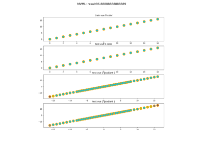
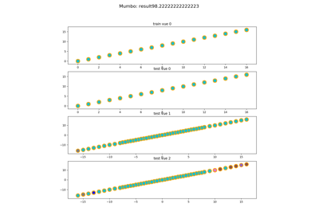
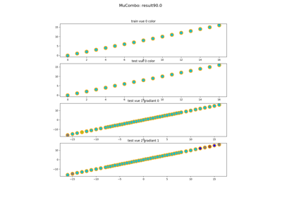

Use Case Examples on Digit
The following toy examples illustrate how the multimodal as usecase on digit dataset of sklearn


sphx_glr_tutorial_auto_examples_usecase_plot_usecase_exampleMVML.py
Use Case of MVML on digit

Use Case MumBo on digit


Use Case MuComBo on digit